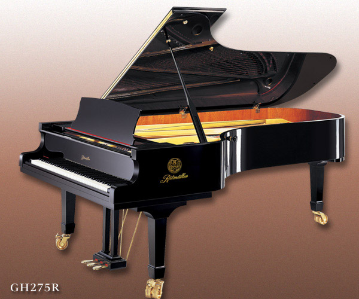

Ritmuller grand piano
Created by master piano designer, Lothar Thomma, this classic grand piano with spade legs and full music desk, brings the very latest in music design and technology to a piano that fits easily in residential interiors. Re-engineered with quality components, the range of upgrades includes plate modification to accommodate new scales, new calculated string lengths, slow-fall fallboard and much more. With the same action and sostenuto as a larger grand, this piano delivers comparable feel and performance.
Ritmuller grand piano Specifications:
o Action: Manufactured with traditional European craftsmanship. All wood parts are made from hard maple and precisely produced by advanced CNC digital machinery to ensure responsive, even touch.
o Action Rail: Extruded aluminum.
o Beams: Oversized domestic walnut for stiffness and strength.
o Bridges: Solid maple capped, vertically laminated bridge, promoting an efficient transfer of energy, resulting in purer sound.
o Dampers: Premium damper felts made in Europe for professional playabilty
o Fallboard: Slow close style.
o Hardware: Solid brass.
o Hammers: Specially selected hammer felt, with an excellent balance of elasticity and firmness, formed to produce a rich assertive tone.
o Key Bed: Butcher-block spruce.
o Key Material: Premium Spruce, select straight grain with ebony wood sharps.
o Middle Pedal: Full Sostenuto.
o Pinblock: 19 cross-plied laminations of hard rock maple, cold pressed and age cured to provide tuning pin stability.
o Plate: Sand-cast, CNC processed.
o Scale: Design by Lothar Thomma with tuned, functional duplex.
o Soundboard: All spruce, core assembled with vertical grain spruce, crafted to provide maximum tonal response and structural integrity.
o Strings: German Röslau wire, copper wound bass strings.
o Tuning Pins: Nickel plated steel, cut-thread.
o Warranty: 10 year parts and labor.
o Measurements:
Length: 4 feet 11 inches
Weight: 736 pounds